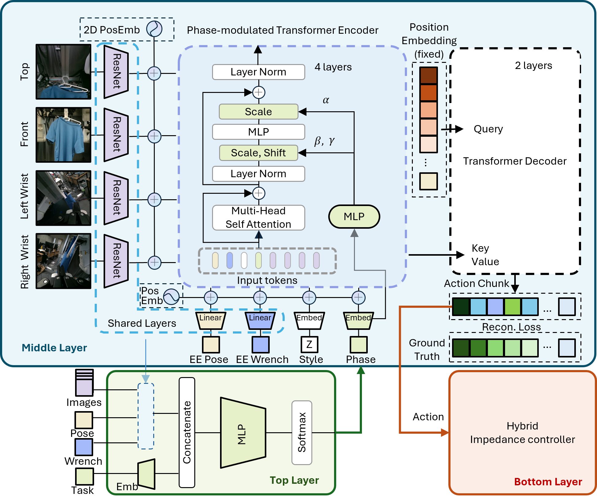

This paper presents a phase-conditioned, force-aware framework for robust deformable object manipulation. Standard imitation learning policies such as Action Chunking with Transformers (ACT) rely on a Markovian assumption at inference, causing state aliasing when visually similar observations require contradictory actions and preventing autonomous recovery from execution failures. We address this with a closed-loop hierarchical architecture. A FiLM-conditioned ACT encoder modulates feature extraction based on the current task phase, enabling a single unified policy to produce phase-specific behaviors while sharing action dynamics across phases. A multi-modal phase predictor fusing visual, force, and pose feedback estimates the phase in real time, detecting contact failures that are invisible to vision alone and autonomously triggering recovery trajectories. The system is completed by a hybrid impedance controller for compliant execution and a haptic teleoperation interface for force-aware data collection. Ablation studies show that FiLM-based modulation significantly outperforms both unconditioned and token-level conditioned baselines, and t-SNE analysis confirms that FiLM induces well-separated, phase-specific feature representations. Validated on hanging and removing a T-shirt with dual arms, the closed-loop system improves the hanging success rate from 56\% to 87\% through autonomous error recovery.
PHASER decomposes the manipulation task into a sequence of explicit phases, each associated with a force-aware sub-policy. A lightweight phase predictor continuously monitors the task progress. When the predicted phase deviates from the expected execution flow, the system triggers a recovery policy — closing the loop between perception, prediction, and action.

Figure 1. Architecture of PHASER. The phase predictor monitors task progress and feeds phase labels to the hierarchical policy. Anomalies trigger the recovery module.
Key Contributions:
We evaluate our method on a higher speed by selecting 5th action from the output chunk. For taking off task, it reduced the smoothness and actio precision. We attribute this to two factors: (1) subsampling the action chunk bypasses the temporal ensembler's smoothing mechanism, producing jerky motion; and (2) faster execution drives the manipulated object into out-of-distribution states not covered by the training data, causing policy confusion. Addressing this would likely require either collecting demonstrations at varying speeds or incorporating online reinforcement learning to adapt to dynamic conditions.
No accleration on the following videos.
(a) Sucess task on hanging with a 5 times speed up.
(b) Sucess on taking off but slower of the overall execution time than normal speed.
(a) A failure case caused an un-recovered drop out.
(b) A failure case caused an unsceen scenario.